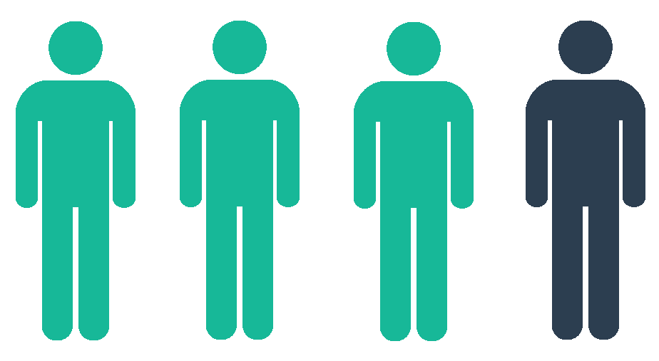
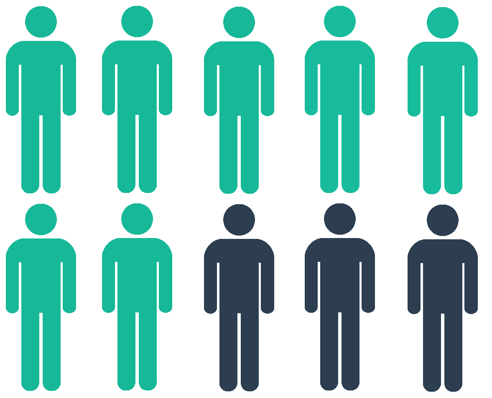
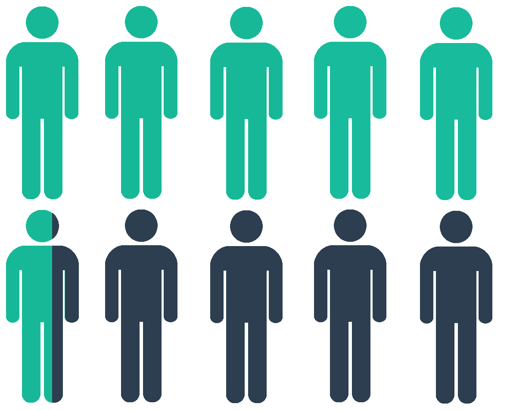

ee
es
Combien touche le producteur
par rapport au prix d'achat
de ces tomates ?
Où ces olives ont-elles été
cultivées, transformées, emballées ?
Quels sont les différents intermédiaires
intervenant dans la fabrication de ce fromage ?
Combien de kilomètres ont parcouru
ces courgettes originaires de France ?
Comment sont fabriquées ces saucisses ?
MEFIANTS

INQUIETS

CONFUS

EXIGEANTS